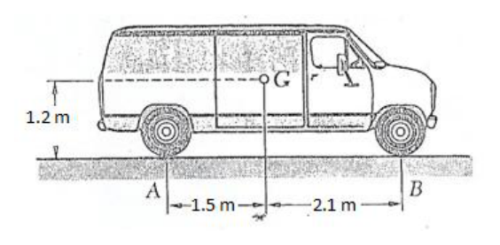

Problema 3
Considere una camioneta de masa con las características indicadas en la Figura, donde G indica el centro de masa de la camioneta. Cuando la velocidad del camión es de , se aplican súbitamente los frenos de manera que las ruedas dejan de rotar y el camión se detiene a los .
a) Calcule la aceleración de frenado del camión, suponiendo desaceleración constante.
b) Calcule el tiempo que tarda en frenar el camión.
c) Calcule el coeficiente de rozamiento.
d) Calcule la magnitud de la normal y de la fuerza de rozamiento en cada rueda delantera.
e) Calcule la magnitud de la normal y de la fuerza de rozamiento en cada rueda trasera. Problema Teórico 1 Hoja de Respuesta Inciso
Puntaje a)
b)
c)
d)
e)
f) Problema Teórico 2 Hoja de Respuesta Inciso
Puntaje a)
b)
c)
Ancho del río:
d)
Problema Teórico 3 Hoja de Respuesta Inciso
Puntaje a)
b)
c)
d)
Fuerza normal:
Fuerza de roce:
e)
Fuerza normal:
Fuerza de roce:
Olimpíada Argentina de Física
Pruebas Preparatorias Primera Prueba: Mecánica Parte Experimental
Nombre: …
D.N.I.: …
Escuela: …
- Antes de comenzar a resolver la prueba lea cuidadosamente TODO el enunciado de la misma.
- Escriba su nombre y su número de D.N.I. en el sitio indicado. No escriba su nombre en ningún otro sitio de la prueba.
- No escriba respuestas en las hojas del enunciado pues no serán consideradas.
- Escriba en un solo lado de las hojas. Objetivos
- “Jugar” con medios granulares.
- Estudiar los efectos disipativos de medios granulares en la dinámica de los recipientes que los contienen.
Breve descripción Un medio granular consiste en un conjunto de partículas macroscópicas que interaccionan entre sí mediante fuerzas de contacto. El tamaño de los granos que constituyen este tipo de materiales abarca desde milímetros hasta metros. Algunos ejemplos de medios granulares son: el arroz, la sal, la polenta, la arena e incluso el material que forma los anillos de Saturno. La materia granular se puede comportar de manera similar a un sólido pero también puede fluir como un líquido. La dinámica de estos medios es por consiguiente muy difícil de describir y aún se están realizando estudios teóricos y experimentales para lograr obtener una descripción completa de la misma. Los sistemas compuestos por medios granulares tienen un comportamiento altamente disipativo, como consecuencia de la cantidad de interacciones entre partículas que se producen en su seno. Es por esto que alcanzan rápidamente un estado de equilibrio en ausencia de una fuente de energía externa.
Propuesta Estudiar el movimiento de un frasco que contiene material granular. Para esto se propone cargar un frasco cilíndrico con material granular y hacerlo rodar por un plano inclinado, y a continuación por una superficie horizontal. Se pretende medir la distancia máxima (L) que alcanza el frasco en función de la cantidad de sustancia granular que contiene.
Consigna Implementar un arreglo experimental similar al de la Figura 1 y realizar los experimentos.
Elementos que pueden resultar de utilidad
- Cinta métrica.
- Cartón rígido o chapa.
- Cilindro contenedor.
- Material granular seco.
- Cinta adhesiva de papel.
- Apoyos para el plano inclinado (libros).
- Dosificador de material granular.
- Espacio libre de obstáculos, para que el cilindro ruede. Sugerencias
Utilizar como cilindro un frasco de vidrio, en lo posible transparente (tipo de café de ).
Utilizar diferentes materiales granulares (arroz, polenta, sal gruesa, sal fina, arena seca etc.).
Utilizar una herramienta para cuantificar el material granular que se utiliza en las mediciones, tipo tapita plástica de gaseosa.
Comprobar que las relaciones entre el recorrido máximo del frasco, el ángulo del plano inclinado y el espacio disponibles son las adecuadas.
Desarrollo de los experimentos Una vez implementado el diseño experimental, para un ángulo fijo del plano inclinado y una posición fija de largada:
a) Realice mediciones de la distancia máxima (L) que alcanza el frasco vacio.
b) Realice mediciones de la distancia máxima (L) que alcanza el frasco cuando contiene diferentes cantidades de material granular. Esto es, mediciones N vs L (numero de tapitas de material granulado puestos en el frasco versus distancia máxima alcanzada). Extienda las mediciones hasta que el material granular llene completamente el frasco. Confeccione una tabla con los resultados. Observe el comportamiento del material granular, contenido en el frasco, durante el transcurso de los experimentos (distribución de material, comportamiento dinámico del mismo, etc.).
c) Registre el número de “tapitas” () necesarias para completar el frasco con su correspondiente incerteza.
Realice experimentos utilizando al menos tres materiales granulares diferentes.
d) Confeccione un gráfico tomando como abscisas el número de tapitas (N) dividido por y como ordenada la distancia L alcanzada por el cilindro. En éste gráfico deben estar contenidos los resultados de todos los experimentos (todos los materiales).
e) Analice y describa los resultados que se desprenden del gráfico anterior.
f) Confeccione un gráfico log-log (escalas logarítmicas) en el que estén todos los resultados.
g) Analice y describa los resultados que se desprenden de este nuevo gráfico.
h) Explique cualitativamente todos los resultados obtenidos y relaciónelos con las observaciones cualitativas que efectuó durante los experimentos (distribución de material, comportamiento dinámico del mismo, etc.). Problema Experimental Hoja de respuestas.
inciso
puntaje a) y b)
Tabla con los resultados
c)
d)
Gráfico
e)
Análisis del gráfico
f)
Gráfico log-log
g)
Análisis del gráfico log-log
h)
Explicación cualitativa de los resultados y observaciones realizadas. Problema Teórico 1 Hoja de Respuesta Inciso
Puntaje a) 1,50 b) 1,00 c) 1,00 d)
2,50 e)
2,50 f) 1,50
Para la solución se utilizó: Problema Teórico 2 Hoja de Respuesta Inciso
Puntaje a) 2,50 b) 2,50 c)
Ancho del río:
2,50 d)
2,50
Para la solución se utilizó: Problema Teórico 3 Hoja de Respuesta Inciso
Puntaje a) 1,00 b) 1,00 c) 1,00 d)
Fuerza normal:
Fuerza de roce:
3,50 e)
Fuerza normal:
Fuerza de roce:
3,50
Para la solución se utilizó: Problema Experimental Hoja de respuestas.
inciso
puntaje a) y b)
Tabla con los resultados
9,00 c)
2,00 d)
Gráfico
4,00 e)
Análisis del gráfico
1,00 f)
Gráfico log-log
2,00 g)
Análisis del gráfico log-log
1,00 h)
Explicación cualitativa de los resultados y observaciones realizadas.
1,00
a) y b) Tablas. En los experimentos se usó Polenta, Arroz y Sal gruesa. N Poleta (tapas) L Polenta (cm) N Arroz (tapas) L Arroz (cm) N Sal Gruesa (tapas) L Sal gruesa (cm) 0 0 0 1 1 1 2 2 2 3 4 4 4 6 6 6 10 10 8 14 14 10 18 2

camion con dimensioni e centro di massaTopic: Newtonian Mechanics, Rigid Body Statics Metodi: Kinematic Equations, Free-Body Diagram, Torque & Angular Momentum Analysis Competenze: Mathematical Modeling, Physical Reasoning, Diagrammatic Reasoning Objects: Wheel Fonte: Testo (PDF) — p.4
Figure
Figure
Figure
Figure
Figure
Figure
Figure
Figure
Figure
Figure
Figure
Figure
Figure
Figure
p.9 — cilindro su piano inclinato con granulare
p.26 — grafico log-log alcance L vs
Problema 3
Considerate un furgone di massa con le Le caratteristiche indicate nella Figura, dove G indica il centro de massa de la
- Il furgone. Quando la velocità del camion es de , se applicano All’improvviso i freni de in modo che le ruote si fermano rotare e il camion si ferma a .
a) Calcolare l’accelerazione del freno del camion, supponendo un rallentamento costante.
b) Calcolare il tempo necessario per frenare il camion.
c) Calcolare il coefficiente di rottura.
d) Calcolare la grandezza della normalità e della forza di rottura su ciascuna ruota
- L’avanguardia.
e) Calcolare la grandezza della normalità e della forza di rottura su ciascuna ruota
- Al fondo. Problema teorico 1 Pagina di risposta Inciso
Punteggio a)
b)
c)
d)
e)
f) Problema teorico 2 Pagina di risposta Inciso
Punteggio a)
b)
c)
Larghezza del fiume:
d)
Problema teorico 3 Pagina di risposta Inciso
Punteggio a)
b)
c)
d)
Forza normale:
Forza di rottura:
e)
Forza normale:
Forza di rottura:
Olimpiada Argentina di Fisica
Prove di preparazione Primo test: meccanica Parte sperimentale
Nome: … (di cui sopra è stato modificato il titolo di articolo)
D.N.I.: …
Scuola: …
- Prima di iniziare a risolvere il test, leggi attentamente TUTTO il testo La stessa frase.
- Scrivi il tuo nome e il tuo numero di D.N.I. al posto indicato. No non scriva il suo nome in nessun altro posto della prova.
- Non scrivere risposte sui fogli della frase, perché non saranno considerate.
- Scrivi su un solo lato delle foglie. Obiettivi
- Giochi con mezzi granulari.
- studiare gli effetti dissipatori dei mezzi granulari sulla dinamica dei contenenti contenenti.
Breve descrizione Un mezzo granulare consiste in un insieme di particelle macroscopiche che interagiscono tra loro attraverso forze di contatto. La dimensione dei cereali che La struttura è composta da materiali che vanno da millimetri a metri. Alcuni esempi La produzione di prodotti di granulazione è composta da: riso, sale, polenta, sabbia e anche da materiale che forma gli anelli di Saturno. La materia granulare può comportarsi in modo simile a un solido, ma può anche fluire come un liquido. La dinamica di questi mezzi è La situazione è quindi molto difficile da descrivere e studi teorici e La ricerca è stata condotta in modo da consentire una descrizione completa della stessa. I sistemi composti da mezzi granulari hanno un comportamento altamente La quantità di interazioni tra particelle che si che producono nel seno. Ecco perché raggiungono rapidamente uno stato di equilibrio in assenza di una fonte di energia esterna.
Proposta Studiare il movimento di un frasco contenente materiale granulare. Per questo si propone di caricare un flacone cilindrico con materiale granulare e di farlo girare da un piano inclinato, e poi per una superficie orizzontale. Si intende misurare la Distanza massima (L) raggiunta dal frasco in funzione della quantità di sostanza granulare che contiene.
Consigna Implementare un sistema sperimentale simile a quello di Figura 1 e eseguire gli esperimenti.
Elementi che possono risultare utili
- Cintura metrica.
- Cartone rigido o lamiera.
- Cisterna contenitore.
- Materiale granulare secco.
- Fascia adesiva di carta.
- Supporti per il piano inclinato (libri).
- Dosificatore di materiale granulare.
- Spazio libero da ostacoli, per far girare il cilindro. Suggerimenti
Utilizzare come cilindro un flacone di vetro, se possibile trasparente (tipo di caffè di ).
Utilizzare diversi materiali granulari (rice, polenta, sale grossa, sale fine, sabbia) secca ecc.).
Utilizzare uno strumento per quantificare il materiale granulare utilizzato nelle misurazioni, tipo tappeto di plastica a gas.
Verificare che le relazioni tra il percorso massimo del frasco, l’angolo di La posizione di un piano inclinato e lo spazio disponibile sono le appropriate.
Sviluppo degli esperimenti Una volta implementato il design sperimentale, per un angolo fisso del piano inclinato e un posizione fissa di partenza:
a) Misurare la distanza massima (L) che raggiunge il flacone vuoto.
b) Misura la distanza massima (L) che raggiunge il flacone quando contiene diverse quantità di materiale granulare. Cioè, misurazioni N vs L (numero di tappe di granulato in bottiglia rispetto alla distanza) massimo raggiunto). Estendere le misure fino a quando il materiale granulare è pieno completamente il frasco. Configuri una tabella con i risultati. Guarda il comportamento del materiale granulare contenuto nel frasco durante il Il corso degli esperimenti (distribuzione del materiale, comportamento La Commissione ha adottato una decisione che prevede che il regime di controllo dei dati sia stato applicato.
c) Registrare il numero di tappi () necessari per completare il frasco con il suo La Commissione ha adottato una decisione che non è stata adottata.
Eseguire esperimenti utilizzando almeno tre materiali granulari diversi.
d) Confezionare un grafico prendendo come abcissi il numero di tapeti (N) diviso per e come ordinato la distanza L raggiunta dal cilindro. In questo grafico I risultati di tutti gli esperimenti (tutti i risultati di tutti gli esperimenti) devono essere contenuti. materiali).
e) Analizzare e descrivere i risultati che si evidenziano dal grafico precedente.
f) Configgere un grafico log-log (scale logarithmiche) in cui siano tutti i dati risultati.
g) Analizzare e descrivere i risultati che si trovano in questo nuovo grafico.
h) Esprimere qualitativamente tutti i risultati ottenuti e confrontarli con i risultati ottenuti. Le osservazioni qualitative effettuate durante gli esperimenti (distribuzione di La Commissione ha adottato una decisione che prevede che il sistema di controllo dei dati sia stato modificato. Problema sperimentale Pagina di risposte.
inciso
punteggio a) y b)
Tabella con i risultati
c)
d)
Grafico
e)
Analisi del grafico
f)
Grafico log-log
g)
Analisi del grafico log-log
h)
Spiegazione qualitativa dei risultati e delle osservazioni realizzate. Problema teorico 1 Pagina di risposta Inciso
Punteggio a) 1,50 b) 1,00 c) 1,00 d)
2,50 e)
2,50 f) 1,50
Per la soluzione è stato utilizzato: Problema teorico 2 Pagina di risposta Inciso
Punteggio a) 2,50 b) 2,50 c)
Larghezza del fiume:
2,50 d)
2,50
Per la soluzione è stato utilizzato: Problema teorico 3 Pagina di risposta Inciso
Punteggio a) 1,00 b) 1,00 c) 1,00 d)
Forza normale:
Forza di rottura:
3,50 e)
Forza normale:
Forza di rottura:
3,50
Per la soluzione è stato utilizzato: Problema sperimentale Pagina di risposte.
inciso
punteggio a) y b)
Tabella con i risultati
9,00 c)
2,00 d)
Grafico
4,00 e)
Analisi del grafico
1,00 f)
Grafico log-log
2,00 g)
Analisi del grafico log-log
1,00 h)
Spiegazione qualitativa dei risultati e delle osservazioni realizzate.
1,00
a) e b) Tabelle. Gli esperimenti hanno usato polenta, riso e sale grassa. N Poleta (spacci) L Polenta (cm) N Riso (spacci) L’Arrozzo (cm) N Sal Gruesa (spacci) L Sal grosso (cm) 0 0 0 1 1 1 2 2 2 3 4 4 4 6 6 6 10 10 8 14 14 10 18 2
camione con dimensioni e centro di massa
Topic: Newtonian Mechanics, Rigid Body Statics Metodi: Kinematic Equations, Free-Body Diagram, Torque & Angular Momentum Analysis Competenze: Mathematical Modeling, Physical Reasoning, Diagrammatic Reasoning Objects: Wheel Fonte: Testo (PDF) — p.4
Figurare
Figurare
Figurare
Figurare
Figurare
Figurare
Figurare
Figurare
Figurare
Figurare
Figurare
Figurare
Figurare
Figurare
**p.9 ** cilindro il suo piano inclinato con granulare
p.26 grafico log-log di portata L vs
The problem is 3
Consider a pickup truck of mass with the characteristics indicated in the Figure, where G indicates the centre de mass de la The van. When the speed of the truck es de , se apply Suddenly The Brakes de The wheel is not moving. The truck stops at the .
(a) Calculate the braking acceleration of the truck, assuming slowdown It’s constant.
(b) Calculate the time it takes to brake the truck.
(c) Calculate the friction coefficient.
(d) Calculate the magnitude of the normal and the friction force on each wheel The front.
(e) Calculate the magnitude of the normal and the friction force on each wheel
- The back. Theoretical problem 1 Answering sheet Incise
Score a)
b)
c)
d)
e)
f) Theoretical problem 2 Answering sheet Incise
Score a)
b)
c)
The width of the river:
d)
Theoretical problem 3 Answering sheet Incise
Score a)
b)
c)
d)
Normal force:
Brushing force:
e)
Normal force:
Brushing force:
Argentine Olympic Games in Physics
Preparatory tests First test: mechanics The experimental part
The following is the list of the countries of the European Union:
D.N.I.: …
School: … is not a school
- Before you start solving the test read carefully ALL the The Commission has not yet adopted a decision.
- Write your name and D.N.I. number. in the appropriate place. No Write your name anywhere else on the test.
- Don’t write answers on the statement sheets because they won’t be Considered.
- Write on one side of the leaves. Objectives
- Play with granular media.
- study of the dissipative effects of granular media on the dynamics of containers containing them.
Short description A granular medium consists of a set of macroscopic particles which are They interact with each other through contact forces. The size of the grains which The material is of this type, from millimetres to meters. Some examples The grain media are: rice, salt, pollen, sand and even the material which is used to make the It forms the rings of Saturn. The granular material can behave similarly to It’s a solid, but it can also flow like a liquid. The dynamics of these media are due to the The results of the study are therefore very difficult to describe and are still being studied theoretically and The Commission has already adopted a number of proposals for a new framework for the implementation of the programme. The granular media systems have a highly behaviour The resulting number of particles is the number of interactions between the particles. They produce in their breasts. That’s why they quickly reach a state of equilibrium. in the absence of an external energy source.
Proposal for a Council Directive Study the movement of a jar containing granular material. For this purpose it is proposed to load a cylindrical jar with granular material and roll it by a slanted plane, and then by a horizontal surface. The aim is to measure the maximum distance (L) to the vial depending on the quantity of granular substance It contains.
Consigns Implement an experimental arrangement similar to that in Figure 1 and perform the experiments.
Elements that may be useful
- It’s a tape recorder.
- Hard cardboard or sheet.
- The cylinder container.
- Dry granular material.
- It’s a paper tape.
- Support for the inclined plane (books).
- A granular material decoder.
- Barrier-free space, for the cylinder to spin. Suggestions
Use as a cylinder a glass jar, as transparent as possible (coffee type of ).
Use of different granular materials (rice, pollen, thick salt, fine salt, sand) the water is dry, etc.).
Using a tool to quantify the granular material used in the measurements, like a plastic gasket.
Check that the relationships between the maximum flow rate of the bottle, the angle of the The slope and available space are the appropriate ones.
Development of experiments Once the experimental design is implemented, for a fixed angle of inclined plane and a Fixed position of departure:
(a) Measure the maximum distance (L) to the empty vial.
(b) Measure the maximum distance (L) to the vial when It contains different quantities of granular material. That is, measurements N vs L (number of granulated carpeting in the bottle versus distance) maximum reached). Extend the measurements until the granular material is filled completely the jar. Make a table with the results. Look at the the behaviour of the granular material contained in the vial during the The results of the experiments (material distribution, behaviour) The following is the list of the main factors:
(c) Record the number of tapits () needed to complete the vial with your The Commission has not yet adopted a proposal.
Perform experiments using at least three different granular materials.
d) Draw a graph taking as an abscisse the number of tapestries (N) divided by by and as ordered the distance L reached by the cylinder. In this graph The results of all experiments (all of the (including materials).
(e) Analyze and describe the results from the above chart.
(f) Set up a log-log chart (logarithmic scales) in which all the logs are The results.
(g) Analyze and describe the results of this new chart.
(h) Qualitatively explain all the results obtained and compare them with the results obtained. The results of the experiment were based on the results of the qualitative observations made during the experiments (distribution of The following information is provided: The experimental problem Answer sheet.
of which:
Score a) y b)
Table with results
c)
d)
Graphic
e)
Analysis of the chart
f)
The log-log graph
g)
Analysis of the log-log chart
h)
Qualitative explanation of the results and observations The Commission has already taken a number of measures. Theoretical problem 1 Answering sheet Incise
Score a) 1,50 b) 1,00 c) 1,00 d)
2,50 e)
2,50 f) 1,50
For the solution: Theoretical problem 2 Answering sheet Incise
Score a) 2,50 b) 2,50 c)
The width of the river:
2,50 d)
2,50
For the solution: Theoretical problem 3 Answering sheet Incise
Score a) 1,00 b) 1,00 c) 1,00 d)
Normal force:
Brushing force:
3,50 e)
Normal force:
Brushing force:
3,50
For the solution: The experimental problem Answer sheet.
of which:
Score a) y b)
Table with results
9,00 c)
2,00 d)
Graphic
4,00 e)
Analysis of the chart
1,00 f)
The log-log graph
2,00 g)
Analysis of the log-log chart
1,00 h)
Qualitative explanation of the results and observations The Commission has already taken a number of measures.
1,00
(a) and (b) Tables. In the experiments, Polenta, Rice and thick salt were used. N Poleta (scoffs) L Polenta (cm) N Rice (scoffs) L Rice (cm) N Sal Gruesa (scoffs) L Salt thickness (cm) 0 0 0 1 1 1 2 2 2 3 4 4 4 6 6 6 10 10 8 14 14 10 18 2
- truck with dimensions and centre of mass*
Topic: Newtonian Mechanics, Rigid Body Statics Metodi: Kinematic Equations, Free-Body Diagram, Torque & Angular Momentum Analysis Competenze: Mathematical Modeling, Physical Reasoning, Diagrammatic Reasoning Objects: Wheel Fonte: Testo (PDF) — p.4
Figure
Figure
Figure
Figure
Figure
Figure
Figure
Figure
Figure
Figure
Figure
Figure
Figure
Figure
p.9 — cilindro su piano inclinato con granulare
p.26 — grafico log-log alcance L vs